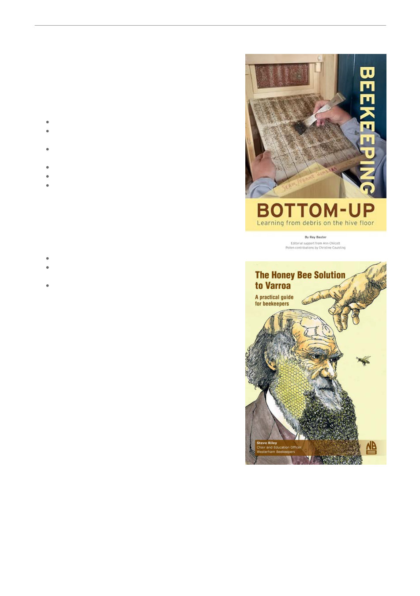

Book Library
Our growing library of beekeeping books is available free
to borrow for all financial members. It’s a shared
resource please help us keep it accessible and in good
condition.
Borrowing Guidelines
Books available at monthly meetings.
Financial members may borrow up to 2 books for 1
month.
Return books at the next meeting or arrange return with
the Librarian.
Late fees apply for overdue books.
Record all loans/returns in the borrowing book.
Books must be returned in original condition; damaged
or lost books must be replaced by the member.
Please respect these guidelines so that every member
has the opportunity to enjoy and learn from our library.
Our member section of the web pages has three section
for books.
Library: View available titles.
Recommened Books: Curated list with purchase links
and digital options.
Books Sales: Here you'll find titles currently available
for purchase through the club. This list will expand
during our Club Book Sales events.
Thank you for supporting this fantastic resource and
helping us build a stronger, more informed beekeeping
community.
New Books
Bottom-Up Beekeeping: Learning from debris on the
hive floor, by Ray Baxter
Learn how to use the debris from the hive floor as an
indicator of colony activity and a way to interpret what's
happening inside and outside of the colony. This book is
based upon a DIY research project about how the debris
from honey bees changes over a year. Ray uses these
observations for a deep-dive into the scientific literature
to explain the debris and relates this to beekeeping
practice. More than two hundred high quality images give
a fascinating insight into life of a honey bee colony. Kindly donated by Stan and Deborah Filippis
The Honey Bee Solution to Varroa, by Steve Riley presents a comprehensive guide for beekeepers
on how to combat the Varroa destructor mite, a significant threat to honey bee populations. Instead
of relying on chemical treatments, the book emphasizes natural methods that allow bees to manage
mite populations effectively. The club has purchased two copys to support members interested in
Project Geelong.